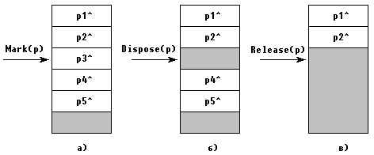

|
|
|
|
Выделение и освобождение динамической память
Вся динамическая память в Турбо Паскале рассматривается как сплошной массив байтов, который называется кучей. Физически куча располагается в старших адресах сразу за областью памяти, которую занимает тело программы.
Начало кучи хранится в стандартной переменной HEAPORG (рис. 6.3), конец - в временной HEAPEND. Текущую границу незанятой динамической памяти указывает указатель HEAPPTR.
Память под любую динамически размещаемую переменную выделяется процедурой NEW. Параметром обращения к этой процедуре является типизированный указатель. В результате обращения указатель приобретает значение, соответствующее динамическому адресу, начиная с которого можно разместить данные, например:
var
i, j : Integer;
r : Real;
begin
New(i) ;
.......
end.
После выполнения этого фрагмента указатель / приобретет значение, которое перед этим имел указатель кучи HEAPPTR, а сам HEAPPTR увеличит свое значение на 2, так как длина внутреннего представления типа INTEGER, с которым связан указатель I, составляет 2 байта (на самом деле это не совсем так: память под любую переменную выделяется порциями, кратными 8 байтам - см. п.6.7). Оператор
new(r);
вызовет еще раз смещение указателя HEAPPTR, но теперь уже на 6 байт, потому что такова длина внутреннего представления типа REAL. Аналогичным образом выделяется память и для переменной любого другого типа.
Рис.6.3. Расположение кучи в памяти ПК
После того как указатель приобрел некоторое значение, т.е. стал указывать на конкретный физический байт памяти, по этому адресу можно разместить любое значение соответствующего типа. Для этого сразу за указателем без каких-либо пробелов ставится значок ^, например:
i := 2; {B область памяти i помещено значение 2}
r := 2*pi; {В область памяти r помещено значение 6.28}
Таким образом, значение, на которое указывает указатель, т.е. собственно данные, размещенные в куче, обозначаются значком ^, который ставится сразу за указателем. Если за указателем нет значка ^, то имеется в виду адрес, по которому размещены данные. Имеет смысл еще раз задуматься над только что сказанным: значением любого указателя является адрес, а чтобы указать, что речь идет не об адресе, а о тех данных, которые размещены по этому адресу, за указателем ставится л. Если Вы четко уясните себе это, у Вас не будет проблем при работе с динамической памятью.
Динамически размещенные данные можно использовать в любом месте программы, где это допустимо для констант и переменных соответствующего типа, например:
r := sqr(r) + i - 17;
Разумеется, совершенно недопустим оператор
r := sqr(r) + i - 17;
так как указателю R нельзя присвоить значение вещественного выражения. Точно так же недопустим оператор
r := sqr(r) ;
поскольку значением указателя R является адрес, и его (в отличие от того значения, которое размещено по этому адресу) нельзя возводить в квадрат. Ошибочным будет и такое присваивание:
r :=i;
так как вещественным данным, на которые указывает R, нельзя присвоить значение указателя (адрес).
Динамическую память можно не только забирать из кучи, но и возвращать обратно. Для этого используется процедура DISPOSE. Например, операторы
dispose (r) ;
dispose (i) ;
вернут в кучу 8 байт, которые ранее были выделены указателям I и R (см. выше).
Отметим, что процедура DISPOSE(PTR) не изменяет значения указателя PTR, а лишь возвращает в кучу память, ранее связанную с этим указателем. Однако повторное применение процедуры к свободному указателю приведет к возникновению ошибки периода исполнения. Освободившийся указатель программист может пометить зарезервированным словом NIL. Помечен ли какой-либо указатель или нет, можно проверить следующим образом:
const
p: Real = NIL;
begin
.......
if p = NIL then
new(p);
.......
dispose(p);
p := NIL;
.......
end.
Никакие другие операции сравнения над указателями не разрешены.
Приведенный выше фрагмент иллюстрирует предпочтительный способ объявления указателя в виде типизированной константы (см. гл. 7) с одновременным присвоением ему значения NIL. Следует учесть, что начальное значение указателя (при его объявлении в разделе переменных) может быть произвольным. Использование указателей, которым не присвоено значение процедурой NEW или другим способом, не контролируется системой и может привести к непредсказуемым результатам.
Чередование обращений к процедурам NEW и DISPOSE обычно приводит к «ячеистой» структуре памяти. Дело в том, что все операции с кучей выполняются под управлением особой подпрограммы, которая называется администратором кучи. Она автоматически пристыковывается к Вашей программе компоновщиком Турбо Паскаля и ведет учет всех свободных фрагментов в куче. При очередном обращении к процедуре NEW эта подпрограмма отыскивает наименьший свободный фрагмент, в котором еще может разместиться требуемая переменная. Адрес начала найденного фрагмента возвращается в указателе, а сам фрагмент или его часть нужной длины помечается как занятая часть кучи. (Подробнее о работе администратора кучи см. п.6.7).
Другая возможность состоит в освобождении целого фрагмента кучи. С этой целью перед началом выделения динамической памяти текущее значение указателя HEAPPTR запоминается в переменной-указателе с помощью процедуры MARK. Теперь можно в любой момент освободить фрагмент кучи, начиная от того адреса, который запомнила процедура MARK, и до конца динамической памяти. Для этого используется процедура RELEASE. Например:
var
p,p1,p2,
рЗ,р4,р5 : Integer;
begin
new(p1);
new(p2) ;
mark(p); .
new(p3);
new(p4);
new(p5)
......
release(p);
end.
В этом примере процедурой MARK(P) в указатель Р было помещено текущее значение HEAPPTR, однако память под переменную не резервировалась. Обращение RELEASE(P) освободило динамическую память от помеченного места до конца кучи. Рис.6.4 иллюстрирует механизм работы процедур NEW-DISPOSE и NEW-MARK-RELEASE для рассмотренного примера и для случая, когда вместо оператора RELEASE(P) используется, например, DISPOSE(P3).
Следует учесть, что вызов RELEASE уничтожает список свободных фрагментов в куче, созданных до этого процедурой DISPOSE, поэтому совместное использование обоих механизмов освобождения памяти в рамках одной программы не рекомендуется.
Как уже отмечалось, параметром процедуры NEW может быть только типизированный указатель. Для работы с нетипизированными указателями используются процедуры:
GETMEM (P, SIZE) - резервирование памяти;
FREEMEM(P, SIZE) - освобождение памяти.
Здесь Р - нетипизированный указатель;
SIZE - размер в байтах требуемой или освобождаемой части кучи.

Puc.6.4. Состояние динамической памяти: а) перед освобождением; б) после Dispose(p3); в) после Release(p)
За одно обращение к куче процедурой GETMEM можно зарезервировать до 65521 байта динамической памяти.
Использование процедур GETMEM-FREEMEM, как и вообще вся работа с динамической памятью, требует особой осторожности и тщательного соблюдения простого правила: освобождать нужно ровно столько памяти, сколько ее было зарезервировано, и именно с того адреса, с которого она была зарезервирована.
Нетрудно обнаружить, что наличие нетипизированных указателей в Турбо Паскале I в стандартном Паскале их нет) открывает широкие возможности неявного преобразования типов. К сожалению, трудно обнаруживаемые ошибки в программе, связанные с некорректно используемыми обращениями к процедурам NEW и DISPOSE, также могут привести к нежелательному преобразованию типов. В самом деле, пусть имеется программа:
var
i,j : Integer;
r : Real;
begin
new(i); {i := HeapOrg; HeapPtr:= HeapOrg + 2}
j := i; {j := HeapOrg}
j := 2;
dispose(i); {HeapPtr := HeapOrg}
new(r); {r := HeapOrg; HeapPtr:= HeapOrg + 6}
r := pi;
WriteLn(j)
end.
Что будет выведено на экран дисплея? Чтобы ответить на этот вопрос, проследим за значениями указателя HEAPPTR. Перед исполнением программы этот указатель имел значение адреса начала кучи HEAPORG, которое и было передано указателю I, азатем и J. После выполнения DISPOSE(I) указатель кучи вновь приобрел значение HEAPORG, этот адрес передан указателю R в процедуре NEW(R). После того как по адресу R разместилось вещественное число pi=3.14159, первые 2 байта кучи оказались заняты под часть внутреннего представления этого числа. В то же время J все еще сохраняет адрес HEAPORG, поэтому оператор WRITELN(J^) будет рассматривать 2 байта числа pi как внутреннее представление целого числа (ведь J - это указатель на тип INTEGER) и выведет 8578.
|
|
|
|